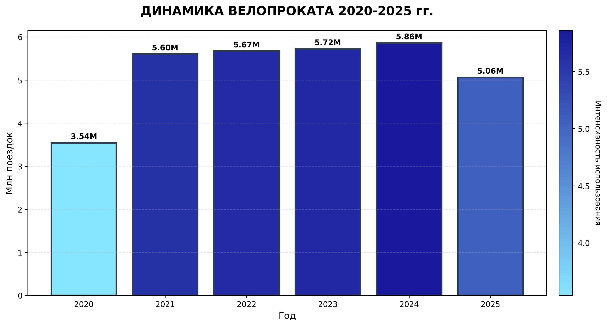
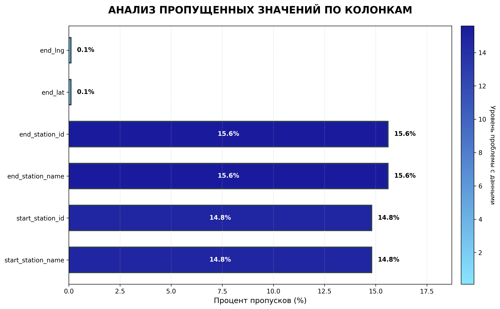
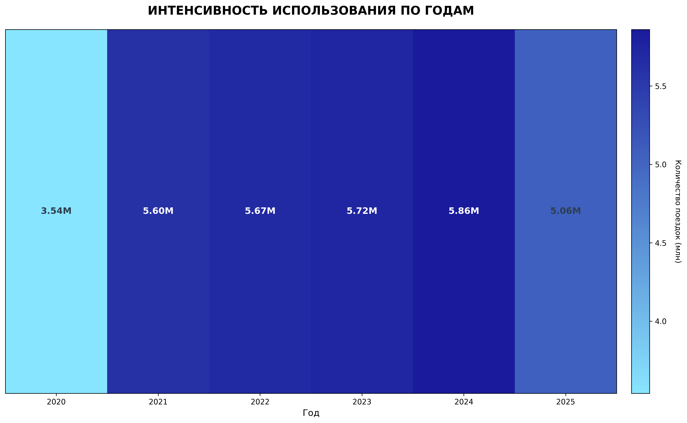
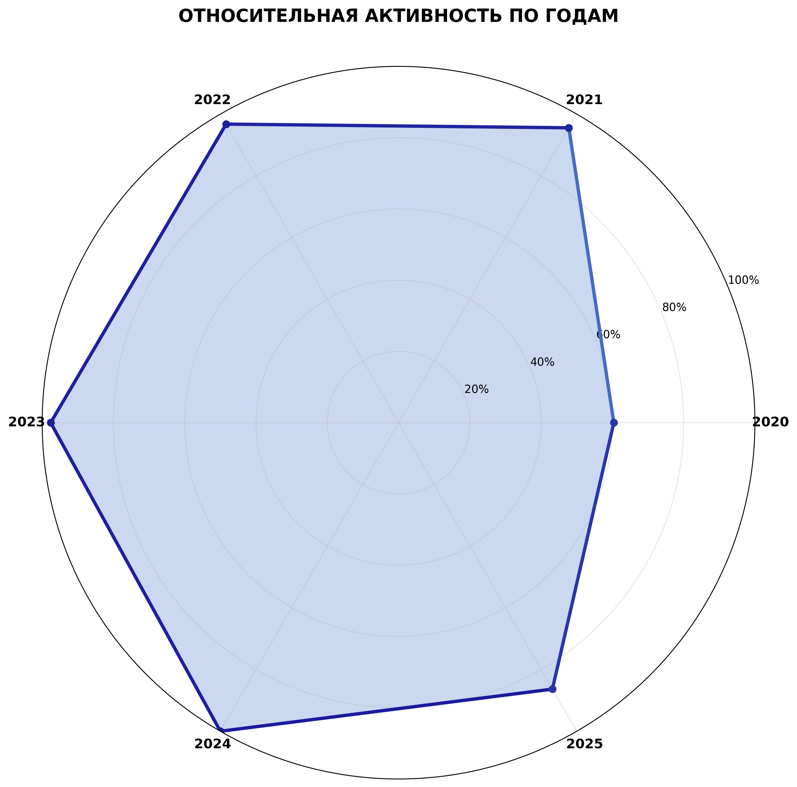

АНАЛИЗ ДАННЫХ ВЕЛОПРОКАТА 2020-2025
Основная статистика
Всего поездок: 31.4 млн
Период: 2020-2025 гг.
Пропусков в данных: 14-16% (станции)
Типы велосипедов: 4 категории
Использованная градиентная палитра
1. Динамика поездок по годам
Градиент отражает интенсивность использования (чем темнее, тем больше поездок)
2. Распределение типов велосипедов

Классические велосипеды (темнее) преобладают, электровелосипеды на втором месте
3. Анализ пропущенных значений
Станции имеют 15% пропусков, координаты - менее 0.1%
4. Тепловая карта интенсивности
Визуализация интенсивности использования по годам
5. Радар-диаграмма относительной активности
Сравнение относительной активности по годам
Ключевые выводы
- Пик использования в 2024 году (5.86 млн поездок)
- Основная проблема данных - пропуски информации о станциях (15%)
- Классические велосипеды - самый популярный тип (45%)
- Стабильный рост до 2024 года, спад в 2025 (неполные данные)